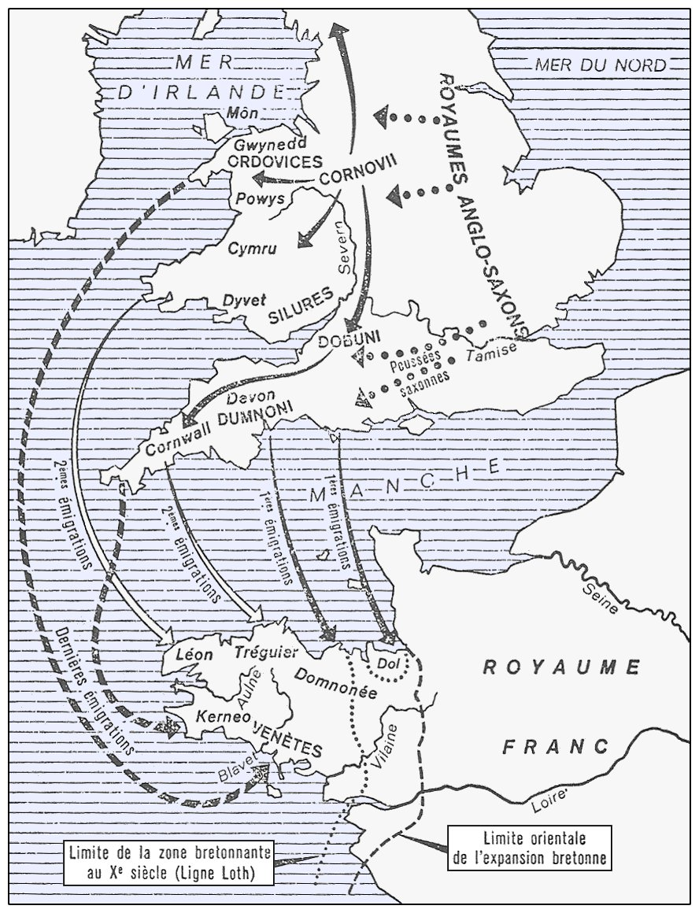
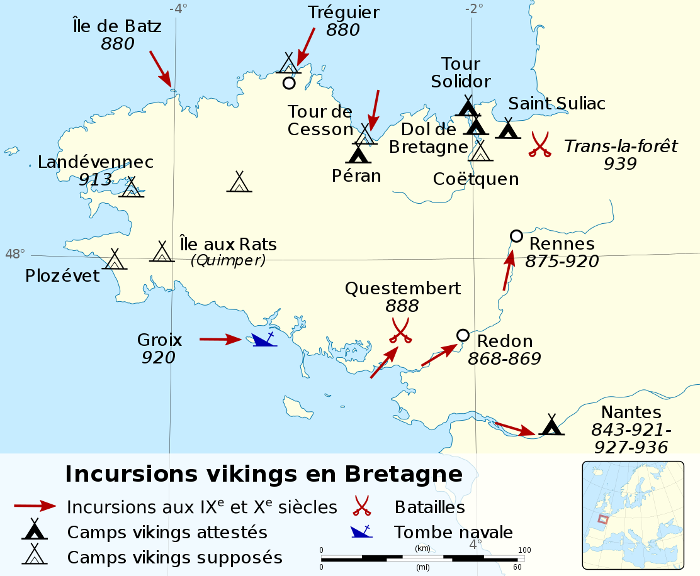

À cette même époque, Charlemagne soumet les Bretons qui se révoltent.
Louis Le Pieux, fils de Charlemagne nomme un Breton à la tête de la Bretagne,
Nominoé, pour calmer les choses. À la mort de Louis le Pieux, Nominoé se
proclame roi de Bretagne et remporte la bataille de Ballon en 845 contre
Charles Le Chauve, le nouveau roi de France. Charles Le Chauve, après une nouvelle
victoire bretonne, reconnait l'indépendance de la Bretagne en 851.
La Bretagne passe du statut de royaume à celui de duché après les invasions
vikings qui ont frappées la Bretagne jusqu'à la bataille de Trans (939) qui a
mis fin à l'occupation du sol breton par les Normands. Le duché de Bretagne
échappe aux mains des rois de France jusqu'en 1213 où la Bretagne passe aux
mains de Pierre de Dreux, un prince capétien. Les ducs de Bretagne se comportent
alors en fidèles vassaux du roi de France, Philippe II.
En 1485, François II, duc de Bretagne, s'engage dans la Guerre folle,
avec plusieurs autres duchés contre Anne de Beaujeu qui exerce la régence
du royaume de France au nom de Charles VIII, son frère. Les troupes bretonnes
sont vaincues et François II s'engage alors à marier Anne de Bretagne,
sa fille et héritière, à Charles VIII.

Émigration des Bretons en Armorique
